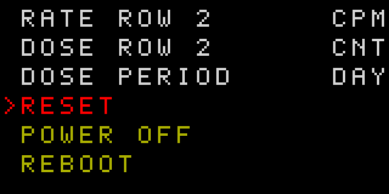
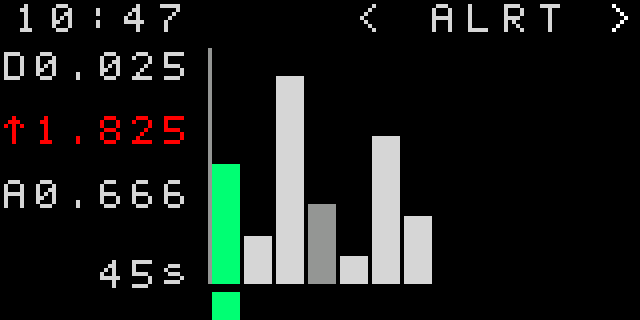

RATE · CALCULATED
—CPM
Desktop: connect over Web Serial. Android: use Connect USB for a CP210x adapter. Opening a serial port may restart the device.
| FIELD | VALUE | DETAIL |
|---|---|---|
| DATE | — | — |
| UPTIME | — | |
| CNT | — | |
| RTC | — | |
| SPI | — | |
| JEDEC | — | |
| BATT | — | — |
| BATT START | — | — |
| SOL | — | — |
| CHARGE | — | — |
| SCREEN | — | — |
| SLEEP | — | — |
| MIN | — | |
| HOUR | — | |
| DAY | — | |
| ALERT | — | |
| SEC | — | |
| STORE | — | |
Connect to compare or synchronize the device clock.
Use Show to control which settings appear in the device menu. Visibility requires firmware protocol support.
Program the firmware embedded in this app. The image is verified after writing.
Recommended: dump and save a FLASH backup before programming. Quick flash erases the firmware currently on the device.
SPI recovery is pending. Use Restore FLASH here before starting another SPI operation.
Flash the latest locally compiled firmware. This uses the existing image checks and does not run PlatformIO.
Recommended: dump and save a FLASH backup before programming.
Recommended: dump and save a FLASH backup before programming.
Choose which mode to start. Bootloader entry is experimental because the board’s RTS/DTR wiring is not confirmed.
Select a device port to begin.
Dump uses the inclusive From-to range. Writing uses From plus the image length; To is ignored, and bytes outside the image are preserved. EEPROM settings, checkpoints, and log areas are shown by the presets.
Dump and save the current EEPROM before writing. Use only an image intended for this device.
Select an EEPROM image that fits from the From address. Read-back verification is always enabled.
Dump uses the inclusive From-to range. Flashing uses From plus the image length; To is ignored. Data outside the image is preserved by saving and restoring affected sectors. If needed, the app temporarily runs the SPI service firmware and restores the device firmware afterward.
Select an SPI image that fits from the From address. Read-back verification is always enabled.
Operation status appears here.
In the app, supported setting changes are sent to the device immediately. On the device, options with more than three choices require long Right to enter editing, short Left/Right to choose a value, and long Right to save; long Left cancels. Unsupported settings remain visible but disabled in the app. The Show checkbox controls whether a setting appears in the device menu; POWER OFF is always shown.
Factory defaults: LED ALWAYS; CLICKS and alarm outputs OFF; both brightness settings AUTO; SCREEN TIMER 10 seconds; TONE STOCK; LEAD ZERO SHOW; UNIT Sv; both prefixes µ; RATE ROW 2 CPM; DOSE PERIOD DAY with DOSE ROW 2 CNT; LONG PRESS 900 ms; HV ON; LOG MEMORY EEPROM; ALARM STOP CLEAR. RATE CUSTOM defaults to 0.9 µSv/h and DOSE CUSTOM to 5 µSv. RATE CUSTOM, DOSE CUSTOM, LONG PRESS, HV, LOG MEMORY, DOSE SCREEN, DOSE LIGHT, DOSE SOUND, ALARM STOP, TONE, LEAD ZERO, RATE PREFIX, DOSE PREFIX, RESET, and REBOOT are hidden from the device menu by default and can be shown from the app.
This guide describes the device display and its two buttons. The illustrations are representative screen layouts; values shown in them are examples.
At startup, the LED lights white for about one second. On Rate, short Left cycles NORMAL → SEARCH → INVISIBLE. If SEARCH has been active for 10 seconds, the next press returns directly to NORMAL. NORMAL has no mode letter; SEARCH shows a green S, INVISIBLE a red I, and the yellow L appears only while the flashlight is manually on. Short Right switches between Rate and Dose. Long Left toggles the flashlight on either main screen.
Long Right on Rate opens the last-used extra screen (Settings is first after startup). The extra screens are Settings and Debug; short Left/Right switches between them. On Settings, long Right opens the settings list; long Left leaves the list, and another long Left returns to the main screen. In Debug, long Right advances through its pages. Long Right on Dose opens Graphs. Holding Left for 3 seconds forces a return to the Rate screen, including from a slow or unresponsive graph. While any alarm is active, the first button press is consumed: it silences the siren, stops alarm light flashing, and acknowledges the alarm. The screen may then time out even if the trigger remains; the alarm can activate again only after the trigger clears and occurs again. If the display is asleep, a button press normally only wakes it. In INVISIBLE, short Left exits the mode and wakes the display in the same press.
The large value is the current rate in the selected UNIT and RATE PREFIX. The top row shows device time when set, otherwise hours and minutes since startup, plus solar input and battery status. RATE ROW 2 selects the smaller second row. During startup, the rate is blue and the progress bar fills to 30 CNT; the estimate starts at 23 CPM and settles toward the measured rate. With HV off, Rate shows red DISABLED; counting and rate/dose updates stop, and turning HV back on restarts the rate warm-up from zero. Rate colors and alarms follow their configured thresholds.
SEARCH keeps the display on and flashes the LED on detector pulses. INVISIBLE suppresses detector indications and alarms and turns the display off after one second; measurements continue. Short Left exits Invisible even while the display is asleep.


Long Right opens the settings list. Short Left/Right moves the highlight. Long Right activates the highlighted item. Options with up to three choices change immediately. For options with more choices, long Right enters value editing; short Left/Right cycles values, long Right saves, and long Left cancels. RESET runs the selected action on long Right without an additional on-device confirmation; the app still asks before executing a reset. The list includes indication and alarm behavior, tone, brightness and screen timeout, units and prefixes, secondary rows, dose period, log memory, long-press timing, reset actions, Power Off, and Reboot. RESET and REBOOT are hidden by default and can be shown from the app. Some items depend on the selected unit. Set the device clock on the app's Settings page.



The extra-screen group contains Settings and Debug. Short Left/Right switches between them. Debug has three pages: time/date, uptime, total pulse count, RTC status and clock source, plus detected SPI capacity and JEDEC ID; voltage and power readings; physical log counts and store status. Long Right advances through Debug pages. SPI is probed when Debug opens. The app presents these diagnostics together in one table.
Shows accumulated dose in the selected UNIT and DOSE PREFIX for the DOSE PERIOD: UPTIME (this run), DAY (the current calendar day), or TOTAL (lifetime). DOSE ROW 2 can show another unit or period, TIME, CPM, or OFF; the default is TIME for UPTIME and CNT otherwise. Short Left changes the shared NORMAL/SEARCH/INVISIBLE indication mode; short Right returns to Rate; long Left toggles the flashlight; long Right opens Graphs.

Long Right from Dose opens Graphs. Short Left/Right cycles SEC, MIN, HOUR, DAY, and ALRT. SEC shows live rate history; long Right cycles its 10/30/60/90-second window. For a log graph, long Right enters column selection; short Left/Right moves cyclically through columns. The selected column is green and its date/time and dose, MAX, AVG, and coverage duration are shown. Long Left leaves column selection; another long Left returns to Dose. Holding Left for 3 seconds forces a return to the Rate screen.
Log graphs show the newest temporary buffer entry first, followed by stored records. They use six-pixel bars with one-pixel gaps, about 15 bars visible at once. The device graph limits are 60 minutes, 24 hours, 50 days, and up to 50 alerts. With no column selected, MIN and HOUR summarize their displayed window; DAY summarizes available daily records. MIN/HOUR recording requires LOG MEMORY=SPI; EEPROM stores daily records. The app's Logs tab lists stored records and coverage details.



Screen colors, values, times, battery and solar percentages in these SVG renders are illustrative. They are not live readings or calibration references.
Replace COM with the device's serial port. Run the commands from the directory containing the firmware image.
STM32_Programmer_CLI -c port=COM br=115200 p=even rts=high dtr=lowSTM32_Programmer_CLI -c port=COM br=115200 p=even rts=high dtr=highSTM32_Programmer_CLI -c port=COM br=115200 p=even rts=low dtr=high -w rom.hex -vSTM32_Programmer_CLI -c port=COM br=115200 p=even rts=low dtr=low -w rom.bin -vCompanion app for custom firmware on the Mira Safety Geiger-2 and Milerd HiStand.
Version: local
HELLO startup check. Unlisted project builds are started without that check.